Manual da equipe para fazer a chamada, acompanhar os alunos e cuidar da agenda, dos materiais, do caixa e dos certificados pelo celular.
Este manual explica como a equipe do Instituto Veridiana usa o app, tela por tela: do primeiro acesso até a chamada do dia, e da chamada até o certificado da aluna e o relatório do edital. O objetivo é que qualquer pessoa da equipe consiga usar o app sozinha — sabendo o que cada botão faz, o que cada aviso quer dizer e o que dá para desfazer.
Não é preciso ler tudo de uma vez. Para começar, bastam a seção 2 (primeiro acesso) e a seção 3 (fazer a chamada). O resto serve de consulta.
A chamada era feita no papel e digitada depois — quando era digitada. Sem registro confiável, o instituto não conseguia comprovar atendimento em edital, que é de onde vem o dinheiro, e a criança que parava de vir só era notada semanas depois, quando faltar já tinha virado hábito.
Tudo o que o app mostra e grava fica numa planilha do Google do instituto. Ela é a única fonte dos dados: o app só lê e escreve nela. Quem tem acesso à planilha pode conferir qualquer número direto lá.
Não funciona sem internet. Se a internet cair na hora de salvar, as marcações continuam na tela e o app oferece Tentar de novo. Nada se perde enquanto a tela estiver aberta.
Não apaga aluno. Aluno que sai vira inativo: some da chamada, mas o histórico dele continua — é dele que sai o certificado.
Não tem níveis de acesso. Toda pessoa cadastrada entra em tudo, inclusive caixa e cadastros. Por isso só entra quem a coordenação cadastrou.
Não guarda a senha de ninguém à vista. Nem a coordenação consegue ver a senha de uma professora; se alguém esquecer, gera-se uma senha nova (seção 8.3).
Antes do primeiro acesso, a coordenação cadastra você em Gestão → Equipe e acessos e manda pelo WhatsApp uma mensagem com o link do app, o seu e-mail e uma senha temporária.
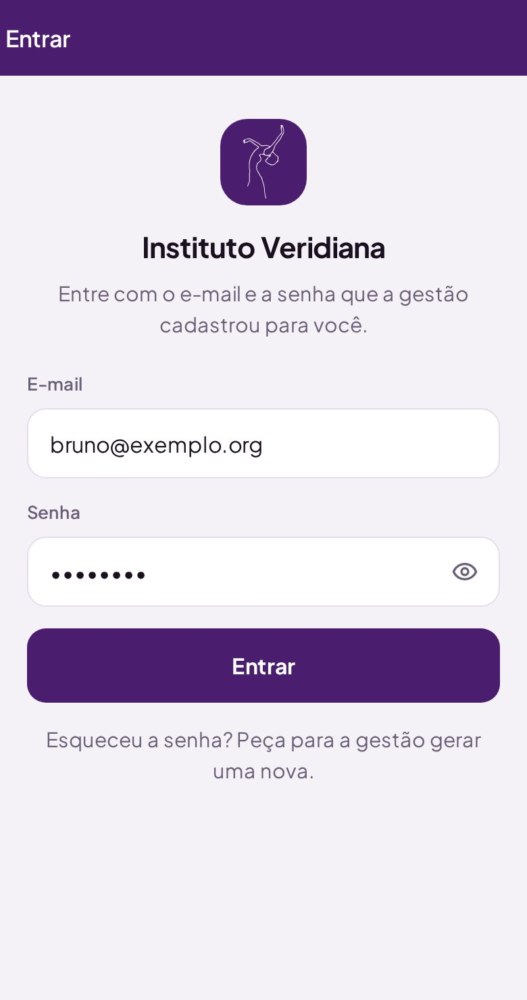
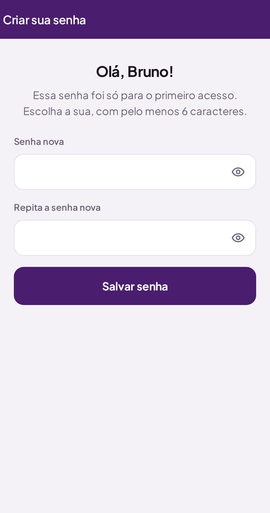
Assim ele abre com um toque, como qualquer aplicativo, e você não precisa do QR de novo.
Depois de entrar, o celular fica conectado por até 30 dias. Alguns navegadores não deixam guardar (aba anônima, por exemplo): nesse caso o app só pede e-mail e senha de novo. Para desconectar de um celular emprestado, use Sair no fim da tela inicial.
Peça para alguém da coordenação abrir Gestão → Equipe e acessos, tocar no seu nome e escolher Gerar senha nova. Chega uma nova senha temporária, e no próximo acesso você cria a sua de novo. A senha antiga para de valer na hora.
Para trocar a senha quando quiser, use Trocar senha no fim da tela inicial.
É a tela mais usada do app, e foi pensada para ser feita com a aula começando, com o celular numa mão só.
Turma cheia? O atalho Todos presentes marca todo mundo de uma vez; depois é só tocar em quem faltou para voltar para falta. Se tocar sem querer, aparece Desfazer por alguns segundos.
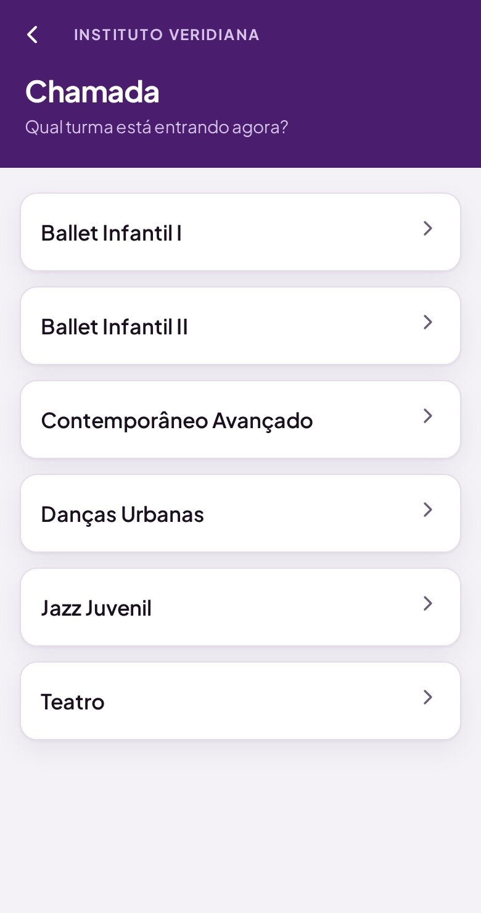
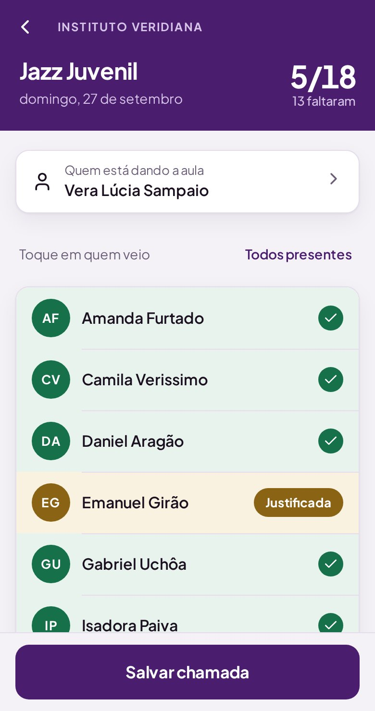
| COMO APARECE | O QUE SIGNIFICA | COMO CHEGAR NELE |
|---|---|---|
| Faltou | O aluno não foi marcado. É como toda a lista começa. Se salvar assim, conta como falta. | É o ponto de partida. Três toques voltam para cá. |
| ✓ Presente | O aluno veio à aula. Conta no histórico, no certificado e no relatório. | Um toque no nome. |
| Justificada | Faltou com motivo (atestado, aviso da família). Não conta como falta seguida no alerta da gestão. | Dois toques no nome. |
No topo da tela, o placar mostra quantos presentes de quantos alunos (por exemplo, 5/18) e quantos faltaram. Se for aniversário de alguém da turma, aparece um aviso antes da lista.
Confira duas coisas: se quem veio está verde e se o nome em Quem está dando a aula está certo. Depois de salva, a chamada entra no histórico, no certificado e no relatório — corrigir exige mexer na planilha.
Depois de salvar, Fazer outra chamada volta para a lista de turmas.
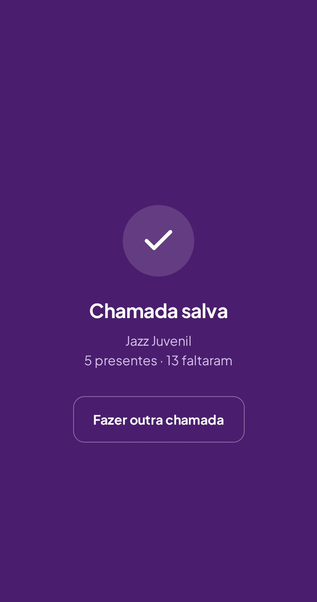
É a primeira tela depois de entrar. No topo, a saudação com o seu nome e a data de hoje.
Logo abaixo, às vezes aparece um cartão com o que é mais provável você precisar agora:
O app descobre o horário das turmas sozinho, pelas chamadas das últimas semanas. Nas primeiras semanas de uso, ou quando há duas turmas no mesmo horário, o cartão não aparece — de propósito: cartão errado atrapalha mais do que ajuda.
Chamada, Agenda, Caixa, Materiais, Certificados e Gestão, cada um com um número de apoio (quantas turmas, o próximo evento, quantos itens).
No fim da tela aparecem o seu nome e e-mail, com Trocar senha e Sair.
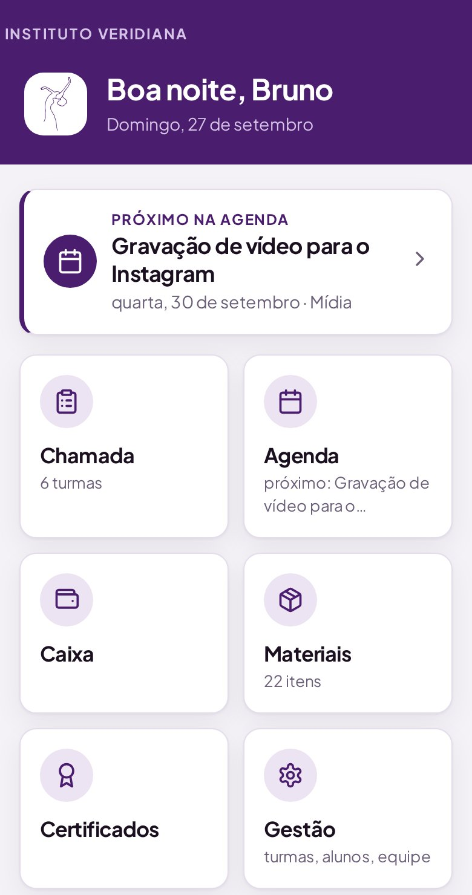
O planejamento do ano: apresentações, ensaios, bazares, reuniões e datas comemorativas. A agenda não substitui o calendário de papel da coordenação — ela o alimenta: dela sai o calendário impresso.
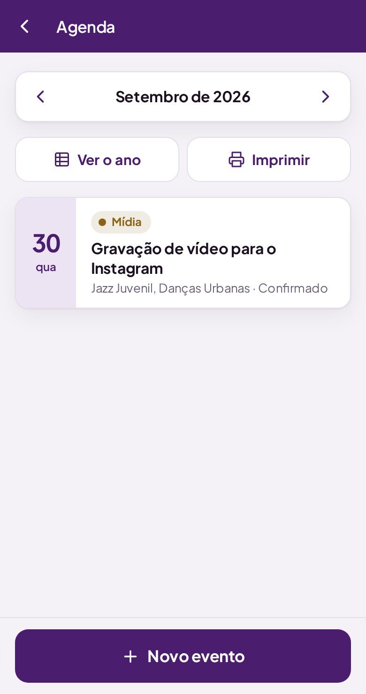
| SITUAÇÃO | QUANDO USAR |
|---|---|
| Planejado | Está na intenção, ainda sem confirmação. |
| Confirmado | Vai acontecer: data e local fechados. |
| Realizado | Já aconteceu. Fica no registro do ano. |
| Cancelado | Não vai mais acontecer. Prefira isto a apagar: o cancelamento fica registrado no ano. |
Tipos de evento: Apresentação, Competição, Data comemorativa, Bazar, Ensaio geral, Reunião, Mídia e Outro. Em janeiro, a opção de datas fixas pré-carrega as datas que se repetem todo ano (hoje, o Dia Internacional da Dança).
O que o instituto tem: som, figurinos, material de aula, móveis, doações para o bazar.
Item que foi embora (doado, quebrado sem conserto) é inativado, nunca apagado.
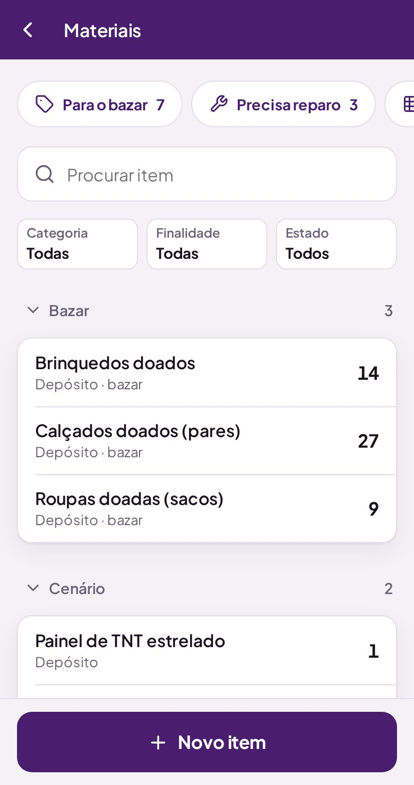
| CAMPO | OPÇÕES |
|---|---|
| Finalidade | Instituto, Bazar, Espetáculo ou Ambos. |
| Estado | Novo, Bom, Usado, Precisa reparo ou Inservível. |
| Categoria | Livre. Sugestões: Som e áudio, Figurino, Material de aula, Móveis, Limpeza, Bazar, Cenário. |
| Local | Livre. Sugestões: Sala de dança, Depósito, Recepção, Armário 1. |
Entradas e saídas de dinheiro, lançadas do celular entre uma aula e outra.
No topo, em caixa é o saldo acumulado até o mês que está na tela; abaixo, o que entrou e o que saiu no mês. Tocar num lançamento mostra os detalhes, o comprovante e a opção de apagar.
Resumo para prestação de contas soma por categoria e por fonte num período, avisa quantas saídas estão sem nota e tem um botão para copiar tudo em texto.
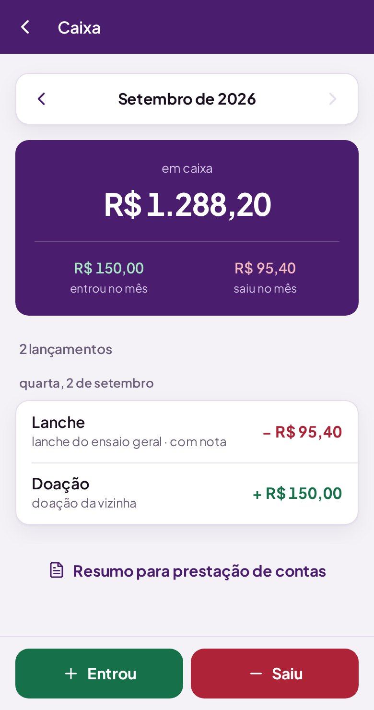
O instituto vive de edital, e a prestação de contas exige mostrar de qual dinheiro saiu cada real. Dinheiro de edital misturado com doação num pote só é o que faz uma prestação ser recusada. Lance sempre a fonte certa.
Categorias de entrada: Doação, Bazar, Edital, Rifa, Evento e Outro. As de saída aparecem na ficha do lançamento.
O menu da gestão reúne os cadastros e os números do instituto. Cada item mostra um resumo: quantas turmas ativas, quantos alunos, quantas pessoas na equipe, quantos alunos precisam de atenção.
No topo, quando há, aparece o aviso de aniversários da semana.
Todo mundo que tem acesso ao app entra na gestão. Por isso, os cadastros aqui mexem no instituto inteiro — faça com calma.
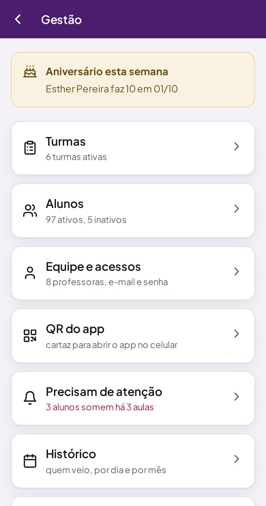
Criar turma pede só o nome. Dentro de cada turma: a lista de alunos, Adicionar aluno, Renomear e Arquivar.
Todos os alunos, com busca pelo nome ou pela turma, separados em Na chamada e Inativos. Tocar num aluno abre:
O app identifica o aluno pelo nome dentro da turma. Se houver duas pessoas com o mesmo nome em turmas diferentes ao mesmo tempo, o certificado conta só a turma escolhida, para não somar as horas de duas crianças. Sempre que possível, cadastre o nome completo.
Quem pode entrar no app. Cada pessoa aparece com o e-mail; uma bolinha amarela indica que ela ainda não fez o primeiro acesso, e sem acesso ao app indica que ainda não tem e-mail cadastrado.
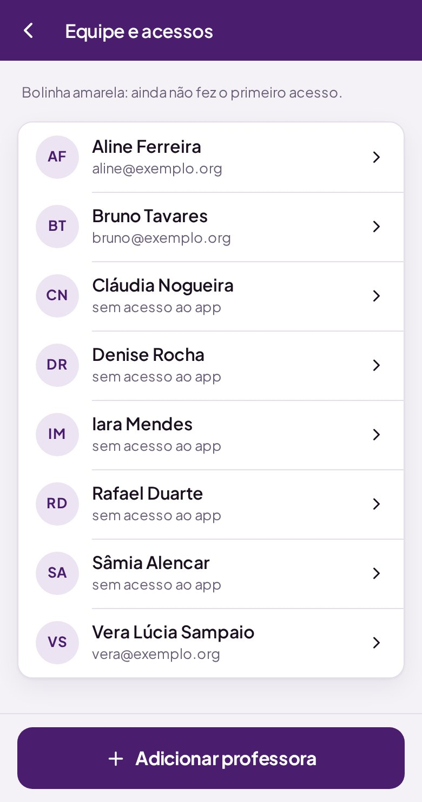
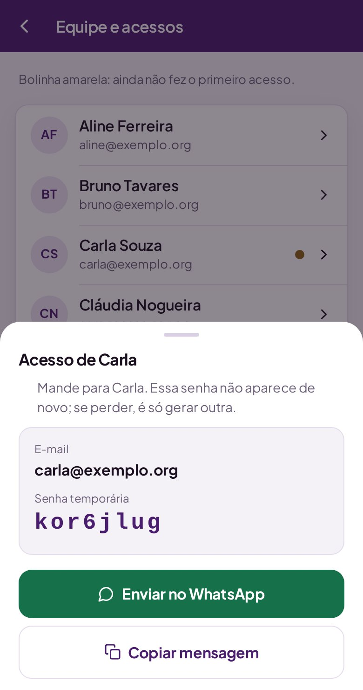
Tocar numa pessoa já cadastrada oferece:
| OPÇÃO | O QUE ACONTECE |
|---|---|
| Dar acesso ao app | Para quem ainda não tem e-mail: cadastra o e-mail e gera a senha temporária. |
| Gerar senha nova | Para quem esqueceu a senha. A senha antiga para de valer na hora, inclusive em celulares já conectados. |
| Mudar e-mail | Troca o e-mail de entrada e gera uma senha temporária nova. |
| Tirar da equipe | A pessoa sai da escolha na chamada e perde o acesso na hora. As chamadas que ela já fez continuam com o nome dela. |
| Trocar minha senha | Aparece no seu próprio nome. Ninguém gera senha nova para si mesmo nem tira a si mesmo da equipe — assim sempre sobra alguém com acesso. |
Depois que a janela fecha, ninguém consegue ver aquela senha de novo — nem a coordenação, nem a planilha. Se perder, é só usar Gerar senha nova.
Acessar o app gera o cartaz com o QR do app, para todo mundo. Quem escaneia cai na tela de entrada — o QR é só um atalho, não dá acesso sozinho.
O cartaz serve para instalar: escanear uma vez, entrar e adicionar à tela inicial. Turma nova não pede cartaz novo.
Para imprimir, abra esta tela no computador e mande imprimir: sai só o cartaz, em A5. Copiar link copia o endereço do app para mandar por mensagem.
Abaixo do QR do app, há também um QR por turma, opcional, que já abre a chamada daquela sala.
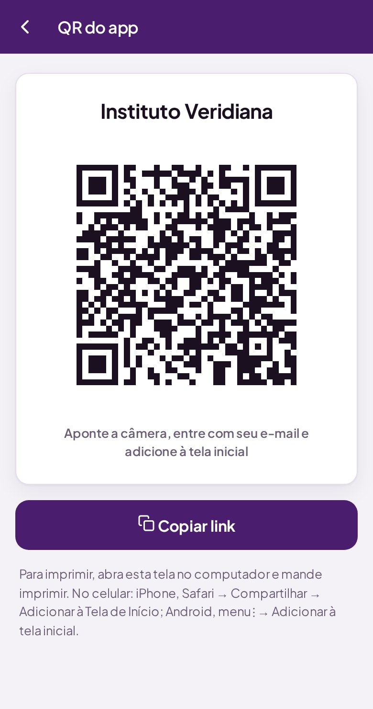
A lista de quem faltou 3 aulas seguidas da própria turma — o mesmo gatilho da busca ativa nas escolas públicas. Para cada aluno: quantas faltas seguidas, desde quando não aparece e o botão Falar com …, que abre o WhatsApp do responsável com a mensagem já escrita.
Se o aluno não tem telefone cadastrado, o cartão vira um atalho para cadastrar na hora.
Faltas justificadas não entram na conta.
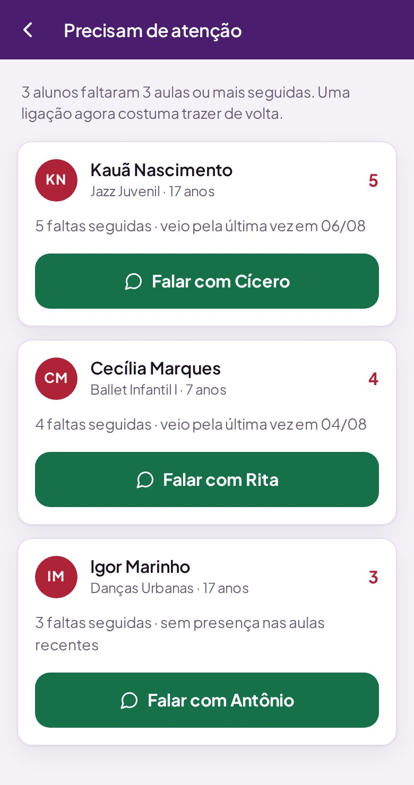
A frequência mês a mês, só para consulta: a porcentagem de presença do mês, o resumo por turma e a lista de aulas dia a dia. As setas trocam de mês.
Chamada salva hoje aparece no histórico em poucos minutos.
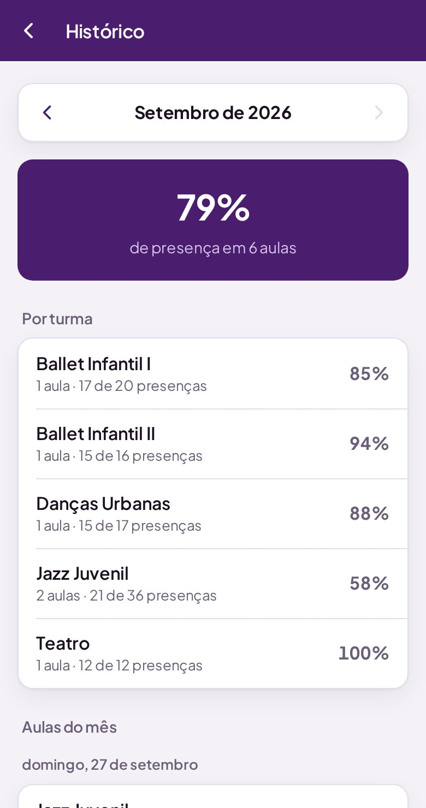
O certificado de participação da aluna: desde quando ela vem, quantas aulas frequentou, em quais turmas e quantas horas isso soma. Serve para currículo de Jovem Aprendiz, atividade complementar na escola e comprovação de vínculo em programa social.
As horas contam as presenças multiplicadas pela duração da aula da turma (cadastrada na aba Turmas da planilha; se não houver, vale 60 minutos).
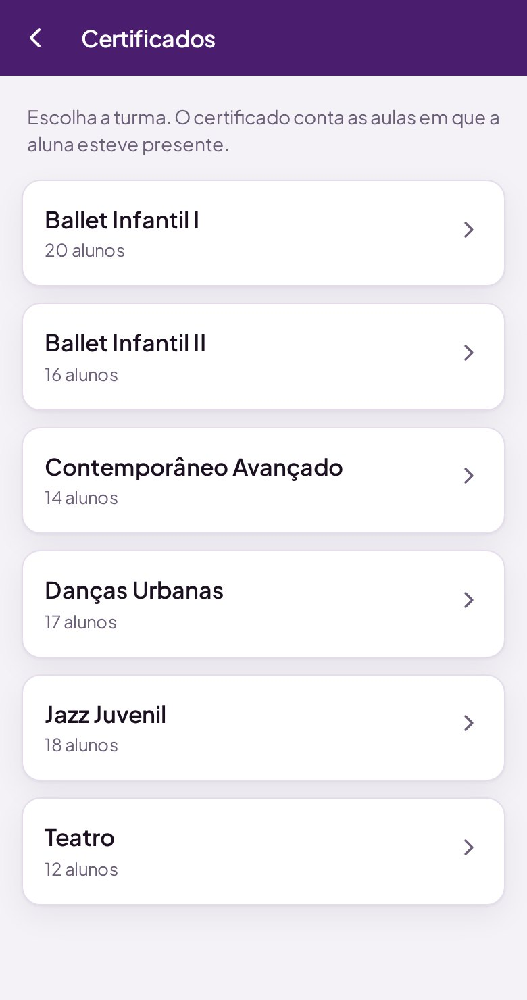
O certificado individual sai com link público, para abrir no celular da família, que não tem conta Google. O da turma inteira fica só no Drive do instituto, para imprimir: teria o nome de 20 crianças num link aberto.
Os números que a prestação de contas pede, para o período que você escolher em De e Até:
Um botão copia tudo em texto, pronto para colar no formulário do edital.
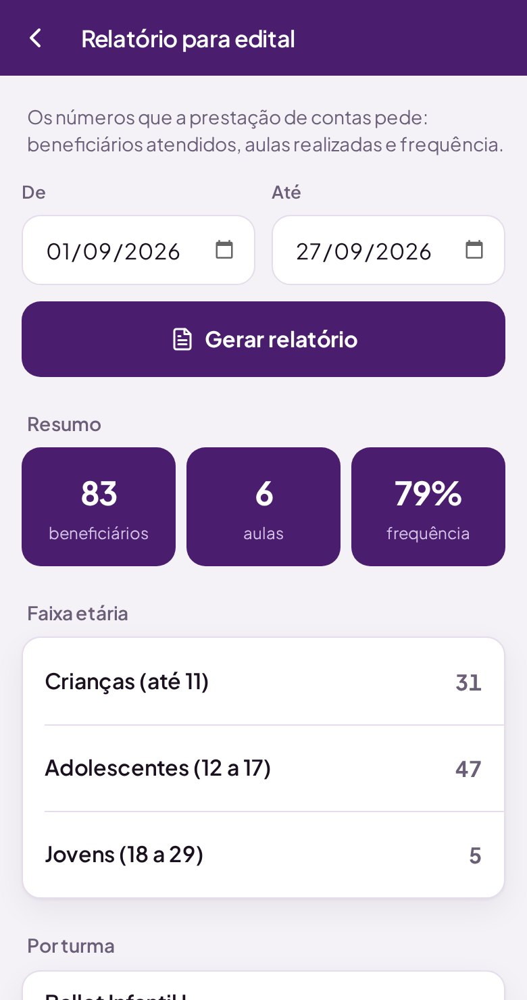
Abre a planilha do instituto e mostra como compartilhá-la. Quem vai mexer direto na planilha precisa ter acesso dado no botão Compartilhar do próprio Google Planilhas — mandar o link não dá acesso a ninguém.
A planilha do Google é onde os dados moram. Quem cuida dela vê, no alto, o menu Veridiana (se não aparecer, recarregue a página uma vez).
| ITEM DO MENU | PARA QUE SERVE |
|---|---|
| Criar acesso ao app | Cria o acesso de alguém (nome e e-mail) e mostra a senha temporária. É como se cadastra a primeira pessoa, e é a saída se todo mundo esquecer a senha. |
| Configurar endereço do app | Só se o QR avisar que falta o endereço: cole o link do app que termina em /exec. |
| Recontar horas dos certificados | Depois de corrigir à mão uma chamada antiga, recalcula as horas de todo mundo na hora (sozinho, o app recalcula a cada 30 dias). |
| Arrumar e padronizar a planilha | Deixa as abas com a mesma cara (cabeçalho, larguras, listas de opção, datas) e monta o Painel, na primeira aba. Pode rodar quantas vezes quiser. |
| ABA | O QUE GUARDA | PODE EDITAR À MÃO? |
|---|---|---|
| Painel | Frequência do mês por turma e dos últimos 14 dias por dia. Atualiza sozinho. | Não precisa: é refeito pelo menu. |
| Alunos | Turma, aluno, ativo (SIM/NAO), nascimento, responsável, telefone. | Sim. Aluno que sai vira NAO — nunca apague a linha. |
| Turmas | Turma, ativa, minutos por aula. | Sim. Os minutos valem para as horas do certificado. |
| Professores | Nome e e-mail de quem entra no app. | Prefira pelo app (Equipe e acessos). |
| Chamadas | Uma linha por aluno por aula: data, turma, quem deu a aula, aluno e situação. | Só para corrigir uma célula. Nunca apague linhas. |
| Caixa, Agenda, Materiais | Os lançamentos, eventos e itens. | Sim, com cuidado. |
| _HorasCertificado | Aba escondida: o resumo das horas de cada aluna. | Não. É refeita sempre que preciso. |
Para abrir rápido, o app guarda por alguns minutos o que já leu. Tudo o que é feito pelo app aparece na hora; mudança feita direto na planilha aparece em até 10 minutos. Não é defeito.
O Google Planilhas guarda todas as versões: Arquivo → Histórico de versões → Ver histórico de versões, escolha o momento antes do erro e restaure.
O app nunca mostra código de erro: cada aviso diz o que houve em português. Os mais comuns:
| MENSAGEM | O QUE HOUVE | O QUE FAZER |
|---|---|---|
| "E-mail ou senha não conferem." | O e-mail não está cadastrado ou a senha está errada. | Confira a digitação (o olhinho mostra a senha). Se não lembrar, peça senha nova à coordenação. |
| "Muitas tentativas erradas. Espere 15 minutos…" | Cinco senhas erradas seguidas travam aquele e-mail por 15 minutos. | Espere e tente de novo, ou peça senha nova. |
| "Sua sessão terminou. Entre de novo." | A senha foi trocada, o e-mail mudou, a pessoa saiu da equipe ou passaram 30 dias. | Entre de novo. Depois do login, o app volta para a tela onde você estava. |
| "A senha nova precisa ter pelo menos 6 caracteres." / "…precisa ser diferente da atual." | A senha escolhida não serve. | Escolha outra. |
| "Esta turma já teve chamada salva hoje." | Alguém já salvou a chamada desta turma hoje. | Só salve de novo se for outra aula de verdade — senão, conta em dobro. |
| "Ninguém presente?" | Você tentou salvar sem marcar ninguém. | Marque quem veio, ou confirme se a turma realmente não veio. |
| "Escolha quem está dando a aula" | O quadro da professora está vazio. | Toque nele e escolha o nome. |
| "Não salvou. Confira a internet…" | A internet caiu no meio do envio. | As marcações continuam na tela: toque em Tentar de novo. |
| "A internet demorou demais para responder." | Sinal fraco. | Aproxime-se do Wi-Fi ou espere e tente de novo. |
| "Esse e-mail já é de …" | O e-mail já está no cadastro de outra pessoa. | Confira o e-mail. Cada pessoa tem o seu. |
| "Para a sua própria conta, use 'Trocar senha'…" | Tentou gerar senha nova para si mesma. | Use Trocar senha na tela inicial. |
| "Mova ou desative os alunos antes de arquivar." | A turma ainda tem alunos ativos. | Mude os alunos de turma ou desative, depois arquive. |
| "Já existe um aluno com esse nome em …" | Esse nome já está cadastrado naquela turma. | Confira se não é a mesma pessoa; use o nome completo. |
| "Valor alto demais. Confira se digitou certo." | O valor do caixa passou do limite de segurança. | Confira vírgula e zeros. |
| "Esse evento/item não existe mais…" | Alguém apagou ou mudou na planilha enquanto a tela estava aberta. | Volte e abra de novo. |
| "Nenhum desses alunos tem presença registrada ainda." | Não há presença para gerar certificado. | O certificado só sai para quem já tem aula registrada. |
| "Não deu para abrir" / "Parte do app não carregou." | A internet falhou ao abrir uma seção. | Recarregue a página. |
Instituto Veridiana · Manual do Usuário · versão 3.5 · 27/09/2026. Dúvidas sobre o app: fale com a coordenação.